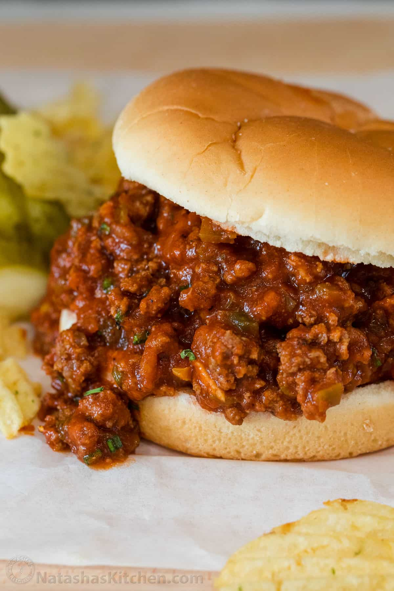

LA RECETTE DE SLOPPY JOE

La MEILLEURE recette de Sloppy Joe :
Saucy, costaud et tellement satisfaisant. Nous sommes convaincus que c'est la MEILLEURE recette pour un Sloppy Joe fait maison.
Le bœuf haché dans une sauce tomate copieuse servi sur des pains à hamburger
grillés est une excellente idée pour le déjeuner ou le dîner.
Il n'y a pas de match pour un sandwich chaud fait maison, du Grilled Cheese à notre célèbre Philly Cheesesteak .
Cette recette de Sloppy Joe est définitivement en haut de notre liste. Cette délicieuse recette de sloppy joe est une recette si simple et si peu coûteuse à préparer,
un dîner familial économique. Le boeuf haché tendre et juteux est sauté avec des poivrons verts et
des oignons puis cuit dans une sauce tomate copieuse.
Ingrédients pour recette de Sloppy Joe :
- 1 petit oignon , finement haché 1/2 petit poivron vert , épépiné et coupé en petits dés
- 1 cuillère à soupe de sauce Worcestershire 1 cuillère à café de moutarde jaune 1/4 tasse d'eau
- 1 cuillère à soupe de cassonade 15 onces de sauce tomate 1 lb de boeuf haché maigre , 85%-90% maigre
- 1 cuillère à soupe d'huile d'olive ½ cuillère à café de sel , ou au goût
- ¼ cuillère à café de poivre noir moulu , ou au goût 3 gousses d'ail , hachées 4 pains à hamburger , grillés si désiré
Étapes :
- Hacher finement l'oignon. Épépinez et coupez finement le poivron vert.
- Dans un bol, mélanger la sauce Worcestershire, la moutarde, l'eau, la cassonade et la sauce tomate.
- Placer une grande poêle ou un four hollandais à feu moyen/élevé. Ajouter l'huile d'olive et le boeuf haché.
Faire sauter le boeuf pendant environ 5 minutes jusqu'à ce qu'il soit bien cuit et plus rose, en le brisant
avec une spatule. Saler et poivrer et ajouter les dés de poivrons et l'oignon.
Cuire encore 5 minutes jusqu'à ce que les légumes soient tendres et que le boeuf soit doré.
- Ajouter l'ail haché et faire sauter 30 secondes jusqu'à ce qu'il soit parfumé, en remuant constamment.
Ajouter la sauce et porter à légère ébullition. Réduire le feu à doux et laisser mijoter à découvert
pendant environ 10 minutes. Assaisonner au goût avec du sel et du poivre et servir sur des petits pains
grillés pour les sandwichs Sloppy Joe.